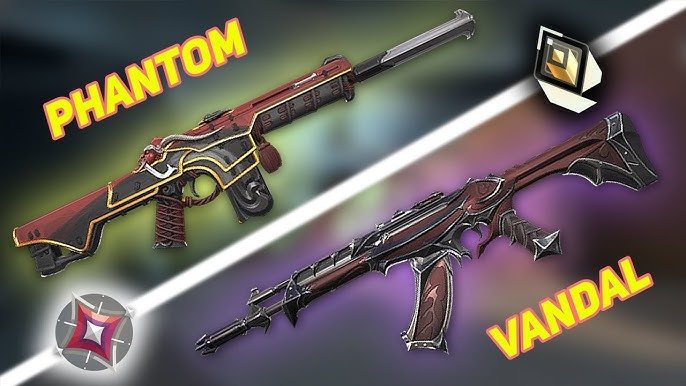

Kelola Artikel

Admin User
Administrator
Total Artikel
47
+3 artikel baruArtikel Terbit
42
89% dari totalDraft
5
11% dari totalTotal Views
15.2K
+12% bulan ini| Artikel | Kategori | Status | Penulis | Views | Tanggal | Aksi | |
|---|---|---|---|---|---|---|---|

Valorant Episode 7 Act 3 Battle Pass: All Skins and Rewards
The new battle pass has arrived with the Imperium, Rune Stone...
|
News | Terbit | John Smith | 2,341 | May 15, 2025 | ||

Top 10 Vandal Skins Ranked by Pro Players
We surveyed 50 professional Valorant players to rank...
|
Guides | Terbit | Sarah Johnson | 1,892 | May 12, 2025 | ||

Reaver 3.0 Collection: Everything We Know So Far
Rumors are swirling about a third Reaver collection...
|
News | Draft | Mike Chen | 0 | May 10, 2025 | ||
|

Phantom vs Vandal: Which Skins Provide the Best Feel?
Different skins can affect how a weapon feels to use...
|
Analysis | Terbit | Emily Davis | 3,127 | May 8, 2025 |